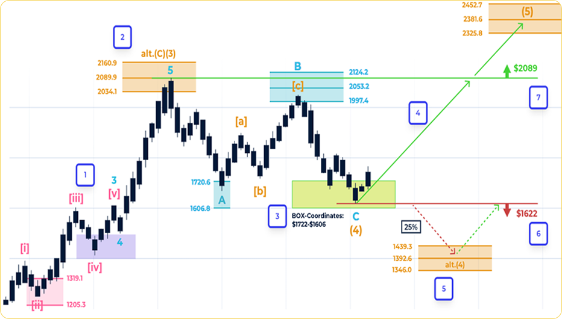

Met onze professionele aandelenvoorspellingen kunt u samen met vele investeerders aanzienlijke rendementen behalen
Deze week hebben zich al 2381 mensen bij ons aangesloten
Onze eigen algoritmen analyseren meer dan 10.000 datapunten per bedrijf om winstgevende kansen te ontdekken die anderen missen.
We bieden duidelijke risico-indicatoren voor elke investeringsaanbeveling om u te helpen bij evenwichtige investeringsbeslissingen.
Weet u precies wanneer u moet kopen en verkopen voor het maximale winstpotentieel van elke aanbeveling?
We bieden alleen geavanceerde inzichten onder specifieke marktomstandigheden. Beperkte plaatsen, vol = vol, registratie wordt gesloten.
Philip Hopf (geboren rond 1985 in Duitsland) is een technisch analist, trader en invloedrijke figuur in de Duitse financiële wereld.
Hij is medeoprichter en managing partner van Hopf-Klinkmüller Capital Management (HKCM) en presenteert de financiële en politieke podcast "Hoss & Hopf".
Hopf is expert in het gebruik van Elliott Wave Theory en Fibonacci-analyse om markttrends te voorspellen. Zijn analyses omvatten aandelen, valuta's, cryptocurrency's en edelmetalen. Hij biedt trendanalyses en handelsstrategieën aan investeerders via zijn platform.
(Joe)
Content Creator
"De marktanalyse heeft me geholpen mijn investeringsstrategie te heroverwegen. Sindsdien kan ik beter geïnformeerde beslissingen nemen en ben ik zelfverzekerder over de markt."
Senior Analist
"Als professionele analist waardeer ik de diepte van de verstrekte informatie enorm. De manier waarop fundamentele en technische analyse worden gecombineerd is indrukwekkend."
Senior Analist
"De inzichten in markttrends hebben me geholpen mijn portfolio te diversifiëren. De duidelijke koop- en verkoopsignalen zijn vooral belangrijk voor langetermijnbeleggingsstrategieën."
Mis onze volgende aanbevelingen voor aandelen met hoog potentieel niet.
